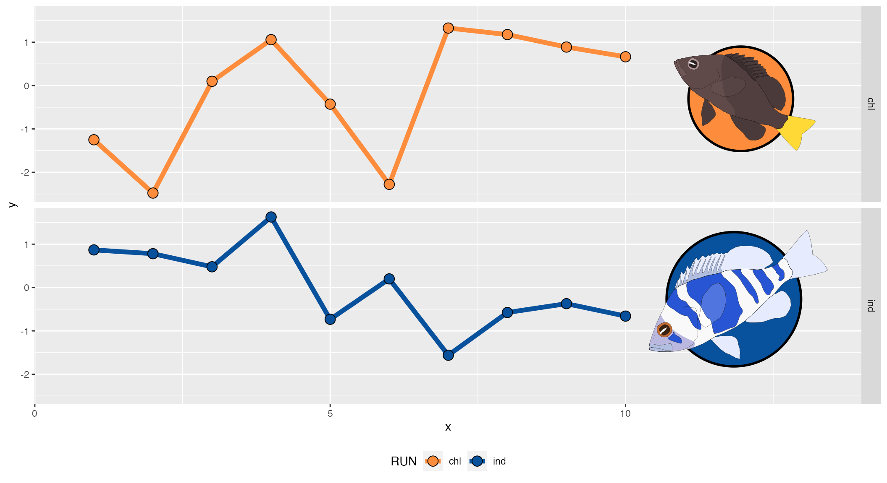

The hypoimg package implements a new geom: geom_hypo_grob().
This geom provides a possibility to distribute grobs over different facets of a ggplot. It needs a tibble that organizes the grobs according to the faceting levels.
This geom builds heavily on the answer by baptiste on the tidyverse github forum issue 1399. To the original answer, only the parameters height, width and angle have been added.
# Our color map
clr <- c(RColorBrewer::brewer.pal(5,'Oranges')[3],
RColorBrewer::brewer.pal(5,'Blues')[5])
# creating a list of grobs from single hamlet legend elements
grobs <- list(hypo_anno_single(species = 'indigo',
circle_fill = clr[2],
circle_lwd = 1,circle_color = 'black') %>%
ggplotGrob(),
hypo_anno_single(species = 'chlorurus',
circle_fill = clr[1],
circle_lwd = 1,circle_color = 'black') %>%
ggplotGrob())
# The tibbble that combines grobs, aesthetic and facetting levels
grob_list <- tibble(RUN = c('ind', 'chl'),
angle = c(30, -30),
height = c(.9,.7),
grob = grobs)
# some fake data set
test_df <- tibble(x = rep(1:10, 2),
y = rnorm(20),
RUN = rep(c('ind', 'chl'), each = 10))
# Using geom_hypo_grob() to distribute the grobs
ggplot()+
facet_grid(RUN~.)+
geom_hypo_grob(data = grob_list,
aes(grob = grob, angle = angle, height = height),
inherit.aes = FALSE, x = .85, y = 0.5)+
geom_line(data = test_df,
aes(x = x, y = y, color = RUN), size = 2)+
geom_point(data = test_df,
aes(x = x, y = y, fill = RUN), shape = 21, size = 4)+
scale_x_continuous(expand = c(0, 0), limits = c(0, 14))+
scale_fill_manual(values = clr)+
scale_color_manual(values = clr)+
theme(legend.position = 'bottom')